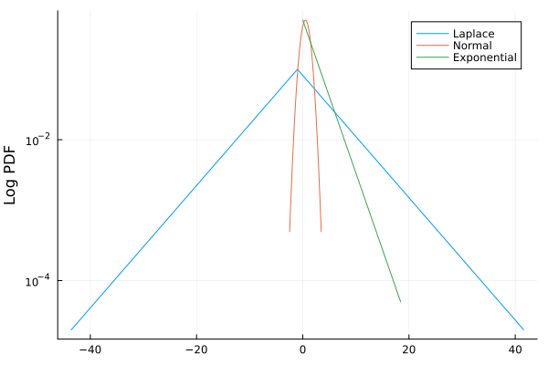
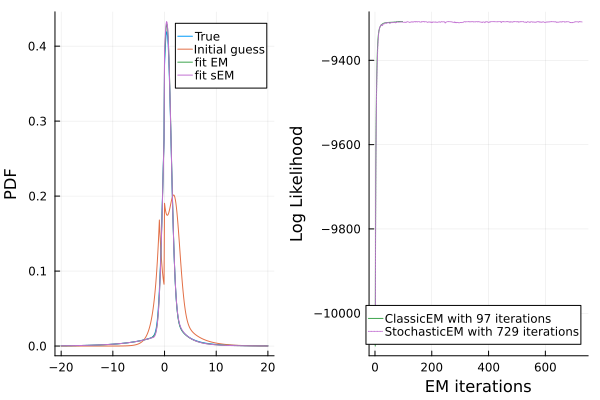
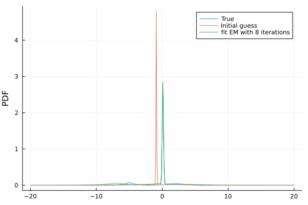

using Distributions
using ExpectationMaximization
using StatsPlots
using Random
Random.seed!(1234)Random.TaskLocalRNG()Univariate Examples
Normal + Laplace + Exponential
Here for fun we test a very unusual combination of mixtures (with distributions not necessarily having the same support, like Normal and Exponential).
Parameters
N = 5_000
θ₁ = 5
θ₂ = 0.8
α = 0.5
β = 0.3
μ = -1
a = 2
mix_true = MixtureModel([Laplace(μ, θ₁), Normal(α, θ₂), Exponential(a)], [β / 2, 1 - β, β / 2])MixtureModel{Distribution{Univariate, Continuous}}(K = 3)
components[1] (prior = 0.1500): Laplace{Float64}(μ=-1.0, θ=5.0)
components[2] (prior = 0.7000): Normal{Float64}(μ=0.5, σ=0.8)
components[3] (prior = 0.1500): Exponential{Float64}(θ=2.0)
Components of the mixture
begin
plot(mix_true, label=["Laplace" "Normal" "Exponential"])
ylabel!("Log PDF", yaxis=:log10)
end
Now we generate some data from this mixture.
y = rand(mix_true, N)5000-element Vector{Float64}:
1.3697667939428688
-5.055841566991943
2.1438104448512294
0.2560789958428542
4.790467644147499
0.01670006157378604
-5.881841442284289
0.00576288770054913
1.1833637830183297
-3.833918597914647
⋮
-0.4024660363860532
1.5692286951713137
3.129267640861765
-0.41318825018959504
0.8788297791831726
-0.6110473623769885
0.26299784375906055
3.153213590715159
-0.22508151256623823We specify an initial condition for the EM fit.
mix_guess = MixtureModel([Laplace(-1, 1), Normal(2, 1), Exponential(3)], [1 / 3, 1 / 3, 1 / 3]);Fit Classic EM
mix_mle_C, hist_C = fit_mle(mix_guess, y; display=:none, atol=1e-3, robust=false, infos=true, method=ClassicEM())(MixtureModel{Distribution{Univariate, Continuous}}(K = 3)
components[1] (prior = 0.1208): Laplace{Float64}(μ=-2.0654300386902666, θ=5.101139783995339)
components[2] (prior = 0.7106): Normal{Float64}(μ=0.5016811606065686, σ=0.7924463837487031)
components[3] (prior = 0.1685): Exponential{Float64}(θ=2.0730867416226)
, Dict{String, Any}("iterations" => 97, "converged" => true, "logtots" => [-10077.913589269996, -9813.204252103003, -9650.02922740977, -9553.812612611146, -9492.945044132866, -9448.545145971717, -9414.572391834023, -9388.9147718783, -9370.07357111042, -9356.458700531442 … -9308.025137929206, -9308.022952103718, -9308.02091812281, -9308.019201650743, -9308.01814523095, -9308.016976725425, -9308.015682866544, -9308.014256695347, -9308.01269397241, -9308.012007016245]))Fit Stochastic EM
mix_mle_S, hist_S = fit_mle(mix_guess, y; display=:none, atol=1e-3, robust=false, infos=true, method=StochasticEM())(MixtureModel{Distribution{Univariate, Continuous}}(K = 3)
components[1] (prior = 0.1120): Laplace{Float64}(μ=-2.476904275492246, θ=5.151806065899432)
components[2] (prior = 0.6968): Normal{Float64}(μ=0.48958379007363495, σ=0.7923670294376742)
components[3] (prior = 0.1912): Exponential{Float64}(θ=2.008833869429946)
, Dict{String, Any}("iterations" => 729, "converged" => true, "logtots" => [-10070.08201248543, -9835.397692658662, -9665.059874234186, -9566.483449565078, -9506.718198386128, -9464.751619183568, -9429.32784701953, -9403.701713448147, -9387.16220199206, -9368.740368737359 … -9308.31789179692, -9308.15544747136, -9308.344236116165, -9308.692449563998, -9308.86072683231, -9308.341613491524, -9308.569574281171, -9309.132709408343, -9309.035195916145, -9309.03560370296]))Plot the results
begin
x = -20:0.1:20
pmix = plot(x, pdf.(mix_true, x), label="True", ylabel="PDF")
plot!(pmix, x, pdf.(mix_guess, x), label="Initial guess")
plot!(pmix, x, pdf.(mix_mle_C, x), label="fit EM")
plot!(pmix, x, pdf.(mix_mle_S, x), label="fit sEM")
ploss = plot(hist_C["logtots"], label="ClassicEM with $(hist_C["iterations"]) iterations",
c=3, xlabel="EM iterations", ylabel="Log Likelihood")
plot!(ploss, hist_S["logtots"], label="StochasticEM with $(hist_S["iterations"]) iterations",
c=4, s=:dot)
plot(pmix, ploss)
end
Mixture of Mixture and Univariate
To showcase the generality of the package, we show how training a MixtureModel composed of a univariate distribution + a MixtureModel works. Note that, in practice, this can cause some identifiability issues (if everything is Normal for example).
θ₁ = -5
θ₂ = 2
σ₁ = 1
σ₂ = 1.5
θ₀ = 0.1
σ₀ = 0.1
α = 1 / 2
β = 0.3
d1 = MixtureModel([Laplace(θ₁, σ₁), Normal(θ₂, σ₂)], [α, 1 - α])
d2 = Normal(θ₀, σ₀)
mix_true = MixtureModel([d1, d2], [β, 1 - β])MixtureModel{Distribution{Univariate, Continuous}}(K = 2)
components[1] (prior = 0.3000): MixtureModel{Distribution{Univariate, Continuous}}(K = 2)
components[1] (prior = 0.5000): Laplace{Float64}(μ=-5.0, θ=1.0)
components[2] (prior = 0.5000): Normal{Float64}(μ=2.0, σ=1.5)
components[2] (prior = 0.7000): Normal{Float64}(μ=0.1, σ=0.1)
We generate some data from this mixture.
y = rand(mix_true, N)5000-element Vector{Float64}:
0.014085591934692443
0.24760940842440315
1.5405097845338345
0.203164530503111
0.09151631807604059
0.187667508703638
0.15594016312772577
0.07627229083661219
3.8393664687361517
0.30226845810652314
⋮
-5.00777039102152
0.07995944817999515
3.888544990084899
0.0824804249744599
0.3308783250776346
0.9498571726438565
0.20432741606484378
0.0631815457387135
0.07579137600107422We choose initial guess very close to the true solution to show EM convergence. This Gaussian mixture of mixture is non-identifiable: other solutions far from the truth exist.
d1_guess = MixtureModel([Laplace(θ₁ - 2, σ₁ + 1), Normal(θ₂ + 1, σ₂ + 1)], [α + 0.1, 1 - α - 0.1])
d2_guess = Normal(θ₀ - 1, σ₀ - 0.05)
mix_guess = MixtureModel([d1_guess, d2_guess], [β + 0.1, 1 - β - 0.1])
mix_mle, hist_C = fit_mle(mix_guess, y; display=:none, atol=1e-3, robust=false, infos=true)
begin
x = -20:0.1:20
pmix = plot(x, pdf.(mix_true, x), label="True", ylabel="PDF")
plot!(pmix, x, pdf.(mix_guess, x), label="Initial guess")
plot!(pmix, x, pdf.(mix_mle, x), label="fit EM with $(hist_C["iterations"]) iterations")
end
This page was generated using Literate.jl.